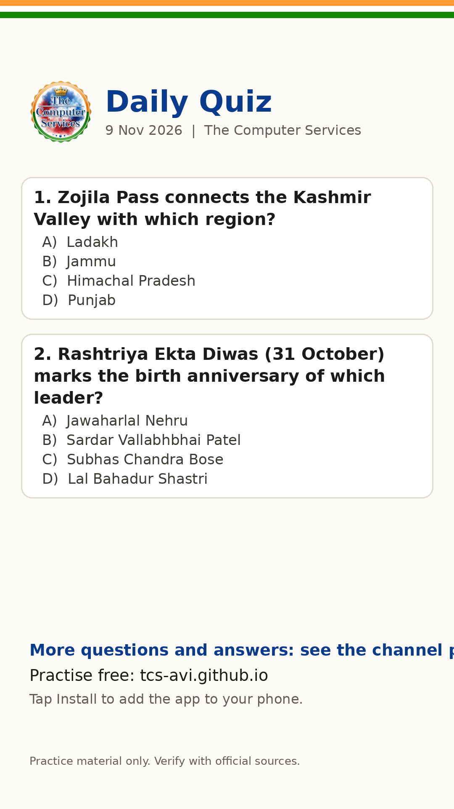

Daily Quiz (9 Nov 2026)
Try today's questions, then share them with friends who are preparing too. Answers are at the end of the text.
📚 *Daily Quiz | 9 Nov 2026* The Computer Services *1. Zojila Pass connects the Kashmir Valley with which region?* A) Ladakh B) Jammu C) Himachal Pradesh D) Punjab *2. Rashtriya Ekta Diwas (31 October) marks the birth anniversary of which leader?* A) Jawaharlal Nehru B) Sardar Vallabhbhai Patel C) Subhas Chandra Bose D) Lal Bahadur Shastri *3. An article bought for Rs 200 is sold at a profit of 10%. The selling price (in Rs) is:* A) 244 B) 204 C) 252 D) 220 *4. Where is the headquarters of Jammu & Kashmir Bank located?* A) Jammu B) Srinagar C) Leh D) Udhampur Reply with your answers. Answers below 👇 . . . . . ✅ *Answers:* 1-A, 2-B, 3-D, 4-B 📢 *Exam updates* • JKSSB Sub-Inspector exam scheduled for 29 Nov 2026 • IBPS RRB PO (Officer Scale I) prelims 21-22 Nov 2026; mains 20 Dec 2026 • IBPS RRB Clerk (Office Assistant) prelims 6, 12, 13 Dec 2026; mains 30 Jan 2027 (Confirm on the official website.) 🔗 Practise free: https://tcs-avi.github.io/ 📲 Tap *Install* in the app to add it to your phone. Found a mistake or have feedback? Use the Report button in the app. Practice material only. Verify with official sources. Not affiliated with any exam body. Spotted a mistake? Email baglajakh@gmail.com
